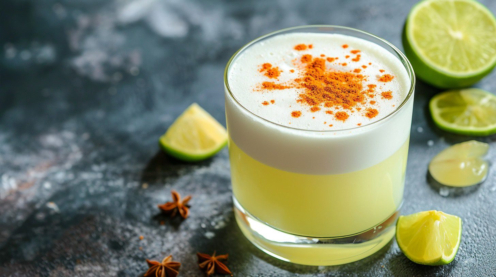

Pisco Sour

Description
The national cocktail of Peru - Pisco Sour is sweet, lemony, and earthy. This Peruvian classic pairs perfectly with some ceviche. The secret to the delicious foamy top is shaking vigorously.
Ingredients
- 2 fl oz Pisco
- 1.5 fl oz Lime Juice
- 1.5 fl oz Simple Syrup
- 1 egg
- Ice cubes
- Angostura Bitters
Steps
- Fill a glass with ice and set aside. prepare and measure the Lime Juice (1.5 fl oz).
- In a shaker, combine the lime juice, Simple Syrup (1.5 fl oz) and Pisco (2 fl oz).
- Separate the Egg (1) white from the egg yolk. Transfer the egg white into the shaker.
- Fill the shaker with ice and shake sharply for about 15 seconds.
- Discard the ice inside the glass that was set aside and prepare your strainer.
- Double strain into the glass.
- Top with three drops of Angostura Bitters (to taste). Serve immediately with ceviche and enjoy! Salud!